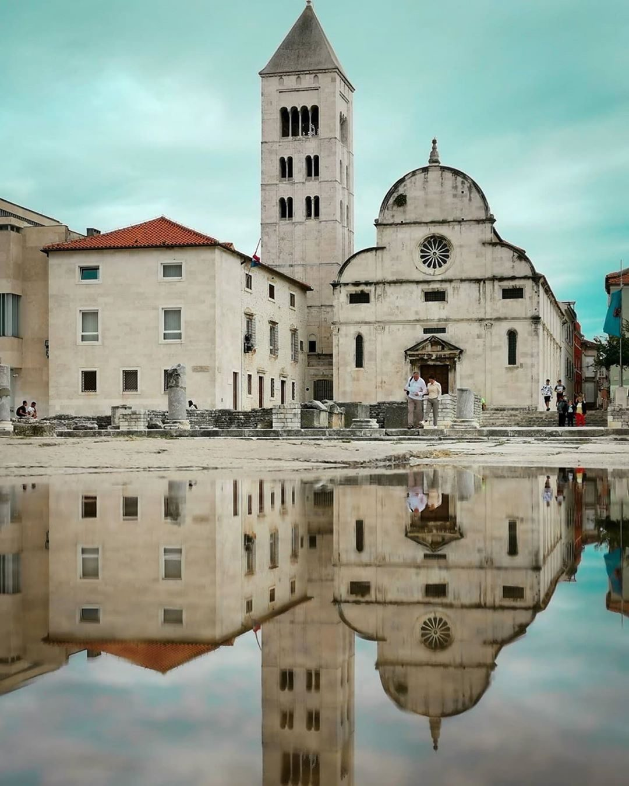

Zadar je jedan od najstarijih hrvatskih gradova, smješten na obali Jadranskog mora. Poznat je po bogatoj povijesti, kulturnoj baštini i brojnim znamenitostima. Tijekom Domovinskog rata grad je pretrpio velika stradanja, ali je ostao simbol hrabrosti i otpora.
Povijesni kontekst
Tijekom Domovinskog rata Zadar je bio jedan od najizloženijih dalmatinskih gradova. Obrana grada i okolnog područja bila je ključna, a ratna stradanja zahvatila su šire područje. Brojne postrojbe i branitelji sudjelovali su u obrani grada, a njihova se uloga danas sustavno dokumentira i čuva.

Žrtve i posljedice
Stradanja stanovništva
Stradanja su bila velika, uključujući civilne žrtve, branitelje i djecu. Tema stradanja djece posebno je naglašena u dokumentarnom filmu „Od toga dana“, koji prikazuje tragične sudbine najmlađih žrtava rata. Takvi sadržaji podsjećaju na težinu ratnih događaja i važnost očuvanja istine.

Očuvanje sjećanja
Spomen na Domovinski rat
Zadar aktivno radi na stvaranju prostora koji će trajno čuvati uspomenu na ratna zbivanja. Spomen-obilježja, dokumentacija, fotografije i svjedočanstva važni su za očuvanje povijesti grada. Na taj se način budućim generacijama prenose informacije o događajima i ljudima koji su sudjelovali u obrani Zadra.

Zaključak
Stradanje Zadra u Domovinskom ratu ostavilo je dubok trag na grad i njegove stanovnike. Današnji projekti sjećanja služe kao dostojanstven način očuvanja istine, odavanja počasti žrtvama i prenošenja povijesti budućim generacijama. Važno je da se takvi događaji ne zaborave.

Dodatne informacije
Više o gradu i njegovoj povijesti možete pročitati na službenoj stranici Grada Zadra: